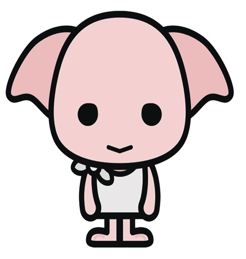
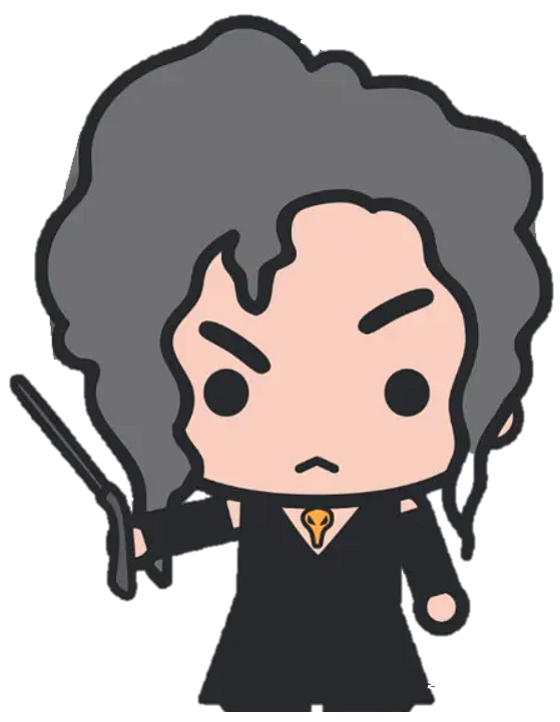

|  | Dobby was a house-elf, for years indentured to the Malfoy family, until his admiration for Harry Potter goaded him into trying to warn Harry against coming to school in his second year because he knew what Lucius was planning with the diary. Dobby interfered with Harry’s life a number of times that year with less than successful results, but in June he earned his freedom when Harry tricked Lucius Malfoy into giving the elf a sock |
| Neville Longbottom is the son of Frank and Alice Longbottom, famous and well-liked Aurors who were tortured into madness by the Death Eater Bellatrix Lestrange. The Longbottoms are one of the few pureblood families in the wizarding world. Neville is a staunch friend of Harry Potter’s, and a true Gryffindor. |
|  | Bellatrix Lestrange was one of Voldemort’s most devoted Death Eaters, a cruel and vicious woman who was guilty of torturing and murdering wizards and Muggles alike. Bella, as she was sometimes called, was the oldest daughter of Druella Rosier and Cygnus Black of the “Noble and Most Ancient House of Black.” Her sisters are Narcissa Malfoy and Andromeda Tonks. A particularly enthusiastic member of Voldemort’s inner circle of Death Eaters, Bella relishes causing pain, especially when her victims are powerless; her specialty is the Unforgivable Cruciatus Curse. |

|
Luna Lovegood is a witch in Ginny Weasley’s year, a brave member of Dumbledore’s Army and a Ravenclaw, who is considered a bit weird by her classmates. She comes by this reputation honestly: Luna simply isn’t like the other kids at all. She dresses unusually, she proclaims her strange beliefs openly, and in some ways she seems to be completely out of touch with what’s going on around her. She has a somewhat bizarre sense of appropriate social behavior. |
| Alastor “Mad-Eye” Moody is a retired Auror, considered one of the best Dark Wizard catchers the Ministry has ever had. Moody came on staff for a year at Hogwarts, but spent it at the bottom of a magical trunk, unbeknownst to anyone but the imposter who put him there. Moody is a member of the Order of the Phoenix. Moody’s favorite expression was “Constant vigilance!” Mad-Eye is noted for his paranoia, particularly in regard to food and drink, but also wand safety; this last may be related to his own missing leg , but that is mere speculation. Moody takes command of any operation he’s associated with. He’s brusque and efficient and anticipates the moves of the Death Eaters. |